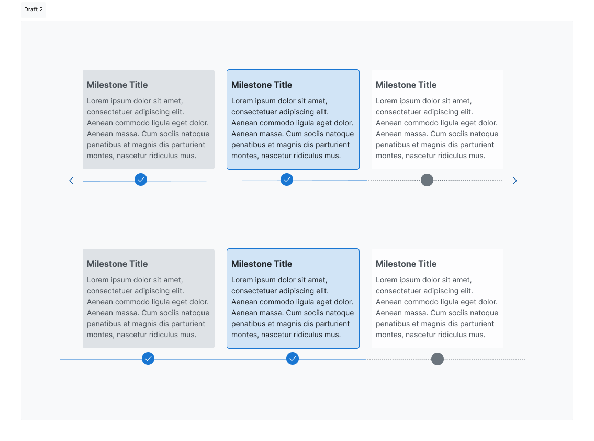
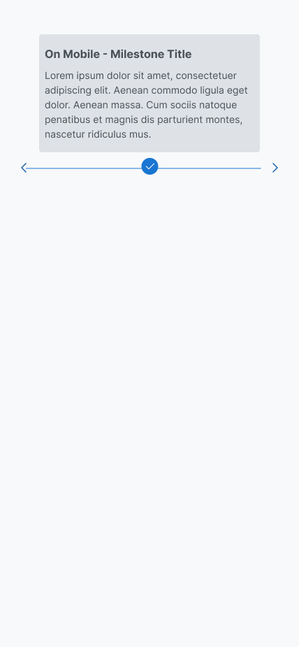
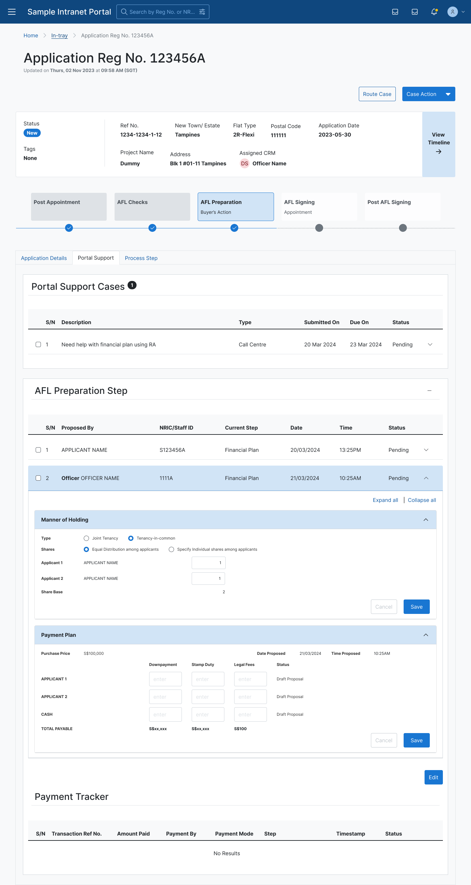
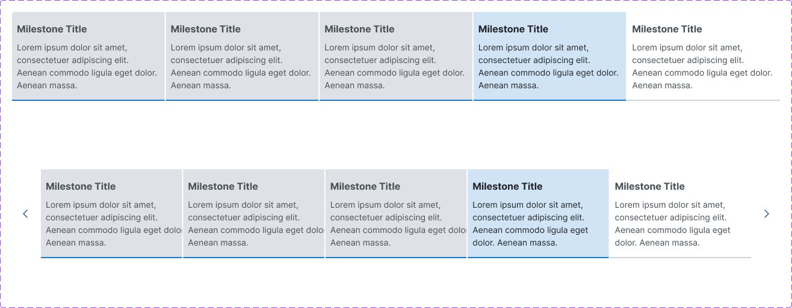
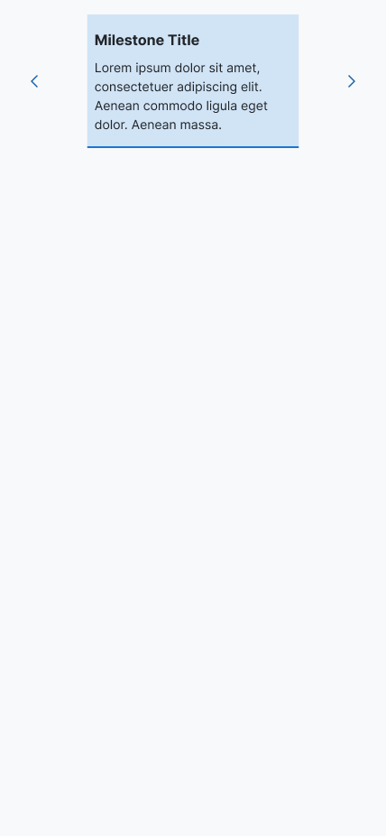
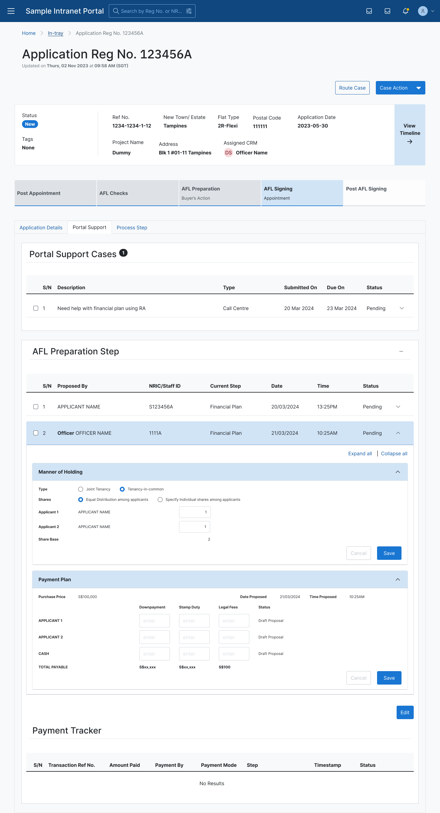
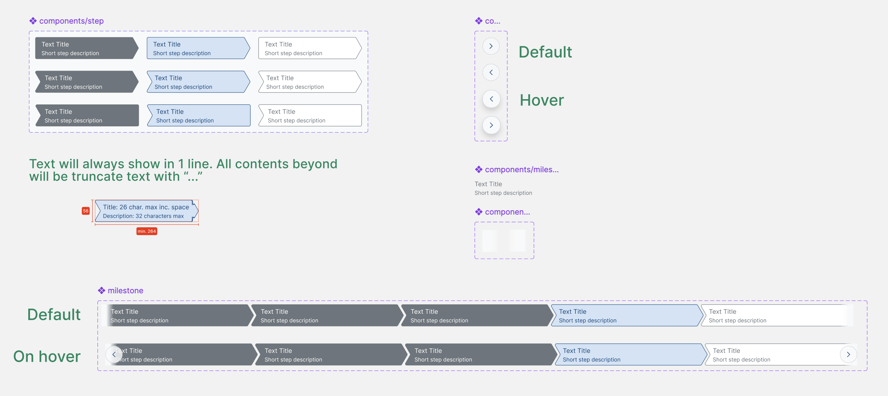
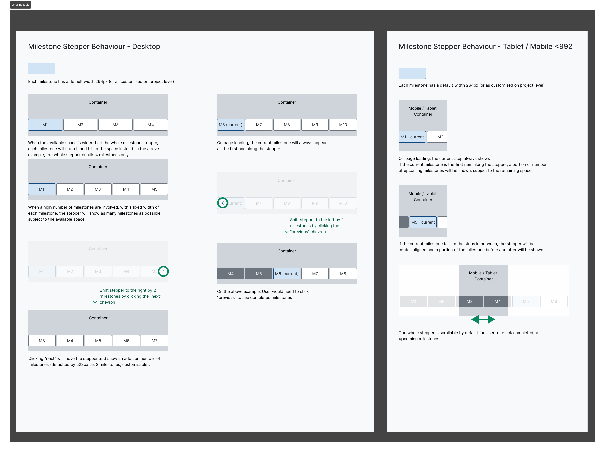

Endorsing a new Milestone component in the Intranet Design System
A product design team requested a new component to indicate the current stage of a Sales application. Because the flow was not a form, the team needed a static visual marker of the current stage rather than an interactive stepper that allows users to jump across steps. They proposed a Milestone component featuring short descriptions of each application stage, designed for their product's desktop view.
Leading the system-level decision
The decision to endorse a new component into the design system required navigating four distinct stakeholder groups, each with a different role in the outcome.
| Role in the Decision | Stakeholder |
|---|---|
| Owner / Driver | Designer-in-charge of the Intranet Design System (me) |
| Approver | Principal UX Designer |
| Requester | The product design team proposing the new component |
| Delivery Partners | 2 developers maintaining the design system; external vendor developers supporting the requesting product team |
Investigate first, expand only when justified
Rather than accepting the component request at face value, I treated it as a systems-level decision that would affect future adopters beyond this one product team.
From evaluation to informed endorsement
Evaluating the original proposal surfaced two clear drawbacks:
- The design could only accommodate very limited description text beneath each step title.
- The design was not mobile-friendly.
Iteration 1 ▪ a card-style direction
I developed a first design variation that served the same milestone-indicator purpose, leveraging a card-style layout to give flexible real estate for longer step descriptions that other products might need.



Iteration 2 ▪ refining the card direction
I developed a second card-inspired variation, tightening the layout and testing it again within the same realistic screen context.



Returning to the original proposal, with an informed trade-off
After two rounds of iteration on the card-inspired direction, I realised it may not fit our organisation's systems, particularly on pages that already carried data-heavy tables and lists. I decided to resort back to the original proposal from the requesting product team, with an informed sense that we might sacrifice some flexibility in step description length. That trade-off became acceptable precisely because I had validated the alternative and observed where it broke down.
Addressing the second drawback
With the direction settled, I focused on the second drawback of the original proposal and extended the Milestone component into a screen-responsive variant. By introducing a scrolling interaction and setting up the display logic accordingly, the component became responsive to screen size and mobile-friendly, especially useful for products serving manager-level users who access systems by company tablet or phone.

The value-add of system-level stewardship
The component that entered the design system was not the same component the requesting team originally proposed. While the core visual direction was preserved, the work I contributed as design system owner transformed a single-team, desktop-only suggestion into a reusable, documented, and responsive system asset, ready for adoption by other product teams across the organisation.
| Dimension | Original Proposal | Final Endorsed Component | Value Added |
|---|---|---|---|
| Scope of use | Tailored to one product team's Sales application | Designed for reuse across other product teams with similar milestone-indicator needs | Broadened from single-use to system-level asset |
| Responsiveness | Desktop-only, with a fixed layout that could not adapt to smaller screens | Screen-responsive and mobile-friendly. Introduced a scrolling interaction and set up display logic so the component adapts across screen sizes, supporting manager-level users accessing systems by company tablet or phone | Solved responsiveness through interaction design and display logic, not just device coverage |
| Description text flexibility | Limited text beneath step titles | Same constraint retained, but as an informed trade-off, validated through two rounds of exploration on a card-style alternative | Trade-off made with evidence, not assumption |
| Consistency with design system | Proposed in isolation, not evaluated against existing components | Assessed against three criteria (Scalable, Accessible, Consistent) before endorsement | Governance applied to protect system coherence |
| Documentation | None | Clear usage guidelines authored for other product designers | Enabled confident adoption beyond the original requester |
System assets delivered
Beyond the component itself, the endorsement included the reusable Figma library and documentation that enable other product teams to adopt it with confidence.


This case study reflects my direct involvement in the design process. Certain details have been generalised or omitted to respect organisational confidentiality. Designs shown are illustrative and may differ from the final implementation.